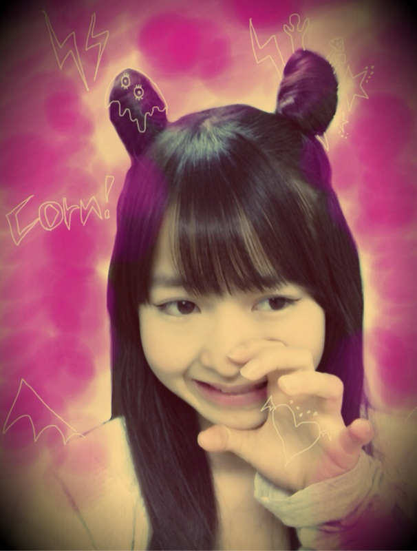

| 2012/01 23 Mon | 57回目*marika |
＼こんばんはっっっ／
いつも読んでくださってる方、
初めて読んでくださった方、
コメントしてくださった方、
ありがとうございます^^
*****HaPPy BirThDAy*****
れな、いくちゃん♡2012.1.22
おめでとさん!!!
れな、
いつも仲良くしてくれて
ありがとおぉっ♡
お互いこれからもふざけ合おうに:D
いくちゃん、
だいぶ前のmeijiの撮影の時
私の似顔絵描いてもらったけど
うん...!!ん〜笑。←
そんなところがまた
どっか抜けててかわいい子ね^^♡
2人ともめっちゃ
しっかり者でまじめで!
透き通った2人の声すきです:)
だいすき ♡**
2人にとって良い一年になりますように...☆
にひ。
今日はこんなアレンジしてみました。
でっで---------------ん:D

ツノヘアー♡
....耳みたいやけどねん
メイクね。
ほぼすっぺんぺんですけど
目尻に長めにアイライン引いてみたら
いつもとちょいと違うお顔に...♪ふふふん
いっぱい落書きで遊んでみたよ ^^
楽しいわね、落書きって。
ふらりと古着屋さんに寄ったら
ツノ付きのニット帽とか
猫耳のニット帽が売ってて
めちゃかわゆかった:3
今日はみんなであるものを見てました!!
教えてあげよっか??
.......おしえな----い:^D
むふふ。
みなさんはお楽しみにやね♪
今日はみなさんからいただいた
コメントを読み返していました**
毎回、何度も思いますが
みなさんは本当に優しいなぁ。
と思っています。
私のBloGをいつも楽しみに
してくださってて....
だから毎回BloG長くなっちゃうのよ~~~!!!
ちゃんと読んでくださって!
本当にありがとうございます;)
毎回私はみなさんからのコメントを
とってもとっても楽しみにしてます^^
すごく元気になるし、笑顔になるし、
魔法みたい!!
質問も答え忘れてしまったり、
変に答えてしまったりとありますが
これからもまりかを
よろしくお願いします****
........て!!
急にあらたまっちゃたよ!!
でもそのぐらいファミリーが
だいすきなの!♡
だいすきやっ
 てれ
てれ
ああ〜///
もう...なんじゃいっ
すきすぎてどうしようもないです:( !
みなさんに私のこと
もっとすきになってほしいなあ。
まりかしかっ
ベビたんしかっ
になってもらえるように
頑張ります＊。きらん
あっ。
最近気づいたんですけど
私の口癖
「なんじゃい」
みたいなんです。
なんでかわからんけど><
自分でもよく言ってる気がして..
お手紙や年賀状を送ってくださった方。
きっと届いてると思いますが
私はまだ見れていません;(
早くお返事を返したいのに
ごめんなさい><
質問はまたまとめてお答えします＊
まひろと乗った観覧車で
寒すぎて首がなくなってもうたまりか
最近アーモンドばりばりぼりぼり食べてます。
おいしい。
今日もみんなお疲れさまりか♪
明日もがんばろーぅ!!
ベビたん*****bA by marika